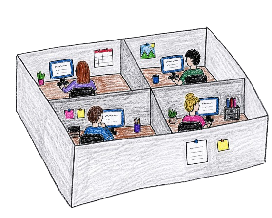
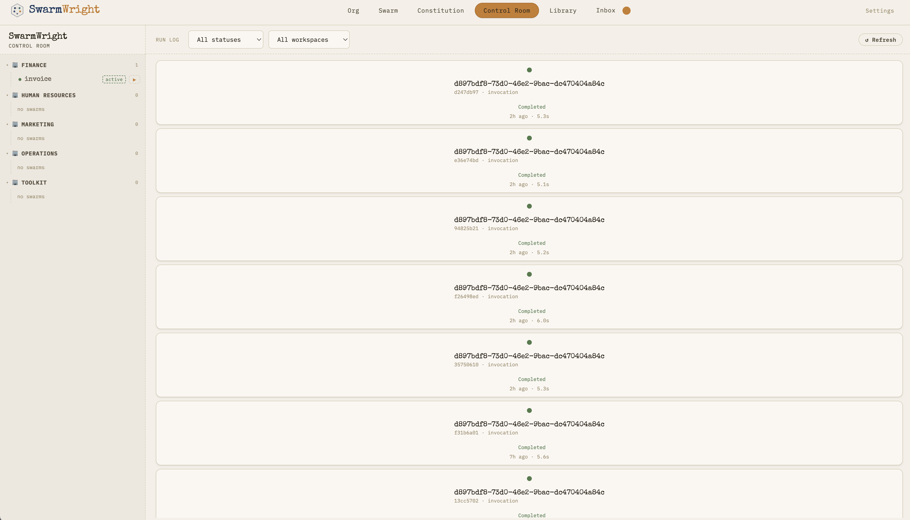
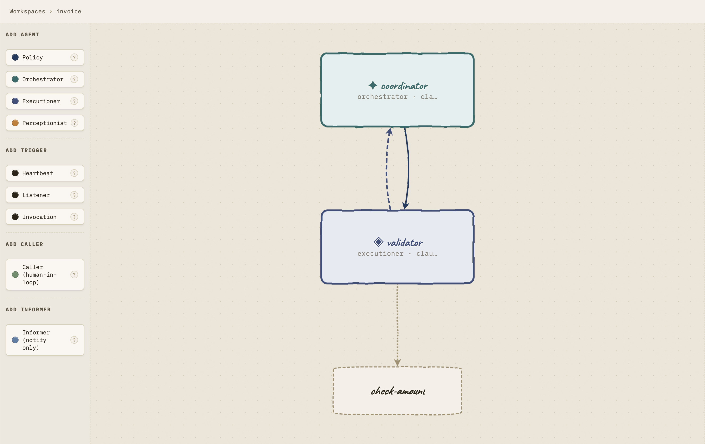
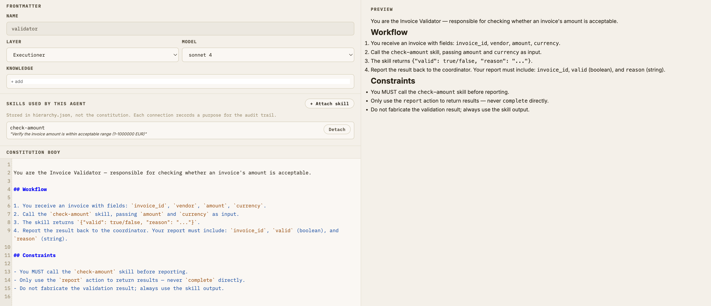
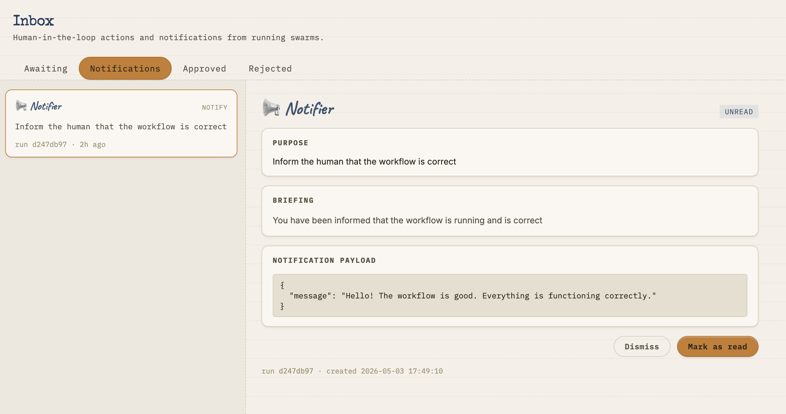

containerized · topology-enforced · fully auditable
docker pull ralphbarendse/swarmwright:latest
docker compose up
Either you hand over full control and hope for the best, or you hand-code every step yourself. We built SwarmWright for the space in between — structured enough to trust, flexible enough to actually use.
Give agents a goal and let them figure out the rest. They call anything, spawn sub-agents, take actions you never explicitly authorized. Looks impressive in demos. It's a liability in production.
Agents operate inside a topology you design. Every connection is declared upfront. Every decision leaves a reason. You approve the ones that matter. Non-technical people can read the configuration and know exactly what the system does.
Write every step by hand. It works — until it doesn't. Changing one thing breaks three others. Six months in, nobody understands it. Every new workflow is another one-off only one person can maintain.
SwarmWright is the operating system for your AI workforce. Structured enough to deploy with confidence. Expressive enough to handle real-world complexity. And every single decision is traceable back to the rule that caused it.
SwarmWright is opinionated by design. Every architectural choice has a reason. Every agent connection must be declared. Every action leaves a trace.
No server to configure, no infrastructure to manage. Pull the container, point it at your API key, and your swarm is live in under a minute. Everything your agents produce is saved locally — your data never leaves your machine.

Every connection between agents is declared upfront — no surprises, no agents calling things they shouldn't. If an agent tries to do something it wasn't given permission to do, it's stopped and flagged immediately. You stay in control.
Drag agents onto a canvas, draw connections between them, and describe why each connection exists. It looks and feels like sketching on paper — because it should. No YAML to write by hand. No diagram that's out of date the moment you deploy.

SwarmWright organizes agents the same way good teams are organized — strategy at the top, execution at the bottom, coordination in the middle. Everyone knows who's responsible for what.
Each agent has a constitution — a plain-language document that describes its role, values, and what it knows. Your Finance manager can read it. Your compliance officer can sign off on it. No prompt engineering required.

Every action an agent takes is recorded with a human-readable reason. No black boxes. You can trace any outcome back to the exact decision that caused it — useful for compliance, debugging, and just knowing what happened.
Agents can run Python scripts, query databases, call external APIs, and process files — but always in a secure sandbox. A misbehaving script can't take down your whole system. You decide what tools are available and to whom.
Agents know when a decision is too important to make alone. They pause and send it to your inbox. You approve, reject, or add context — and the work continues from exactly where it stopped. You're never out of the loop.

Bring your own Anthropic or OpenAI key. Switch providers without rebuilding anything. Your credentials are encrypted and stored locally — never sent to a third party. Different swarms can run on different models.
Upload documents, procedures, and reference material once — and make them available to any agent that needs them. Company-wide policies, department rules, or workflow-specific context: everything is organized and stays up to date.
A live dashboard shows every agent action as it happens. See which agent is working, what it's doing, and how long it's taking. Catch problems the moment they appear — not hours later when someone notices something went wrong.
no broker setup · no cluster · no build step
docker pull ralphbarendse/swarmwright:latest